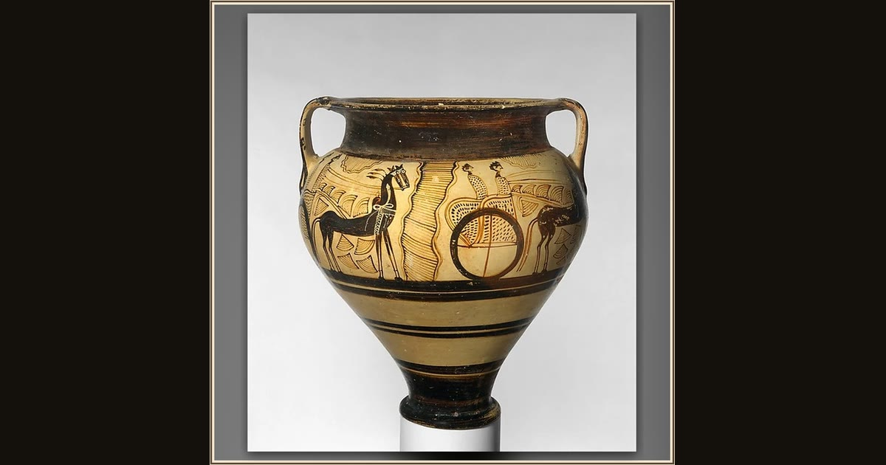

Terracotta chariot krater
Unknown · ca. 1375–1350 BCE · The Metropolitan Museum of Art
Aeneas and Pandarus mount their chariot and drive toward Diomedes (5.239–240). Horses and a chariot are painted on this clay bowl. Explore its place in Homer's Iliad, Book V, line 239.